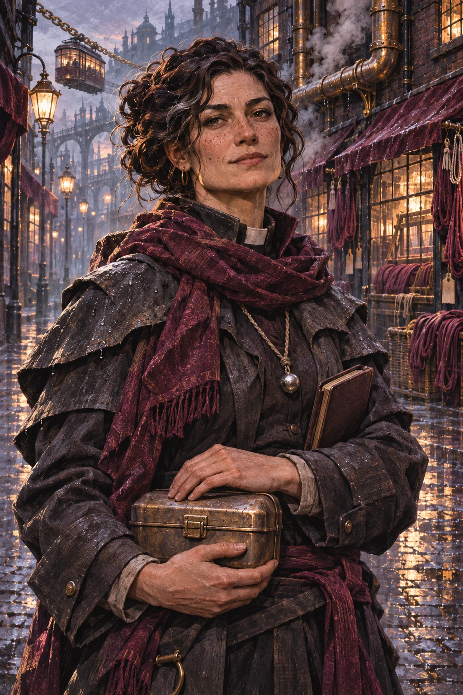
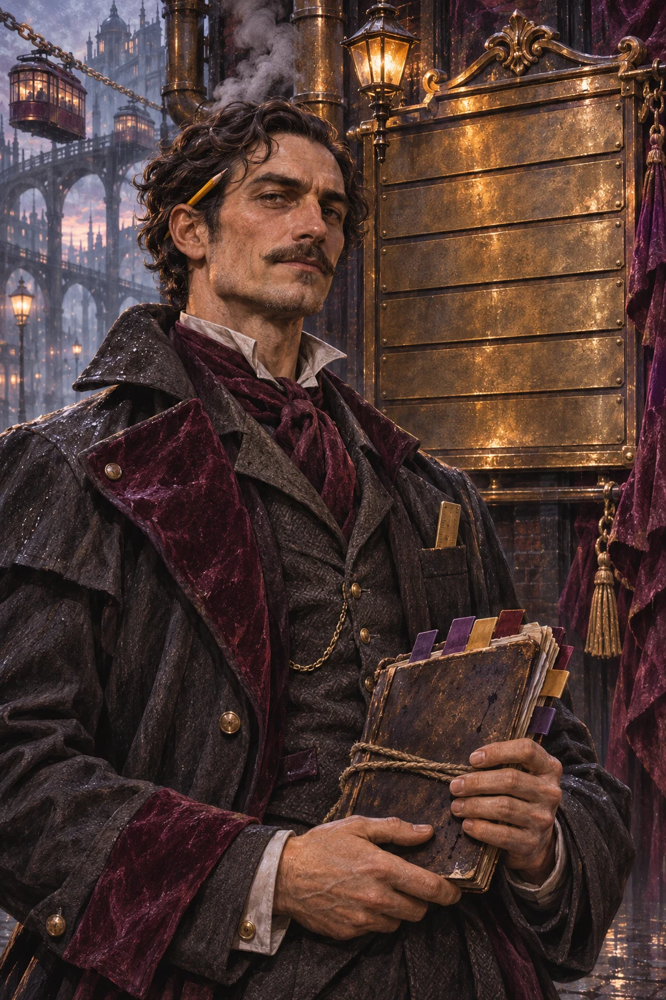
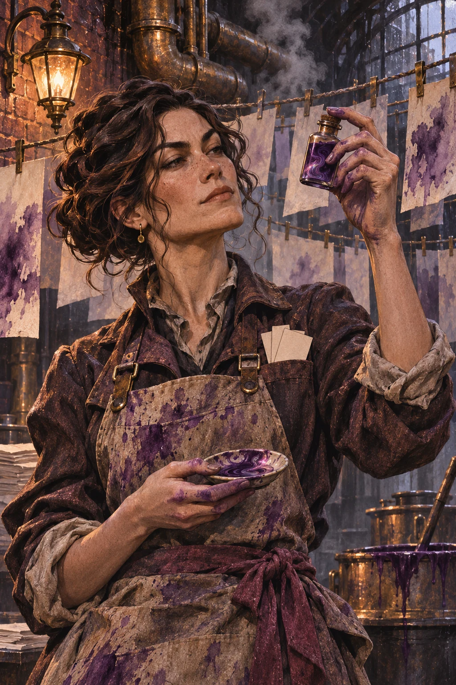

Мир и начало
Вельтень стоит вокруг печей, питаемых добровольными магическими поручительствами. Трамваи тянут зачарованные цепи, нотариусы взвешивают оттиски, биржа торгует обязательствами. Долг вписан в Бархатный Реестр — Книгу, которую держит банкирский Бархатный дом; его тень лежит на пороге должника, пока строка не закрыта. Биржа работает каждый торговый день: утренний колокол, торговля на полу и в городе, вечерний колокол. Это вымышленная магия Вельтеня, а не учебник торговли: герои используют поддерживаемые классы третьего уровня и обычные проверки.
Вельтень стоит вокруг печей, которые греют обещания. Здесь это не поговорка: печь в каждом доме топится добровольным поручительством, и пока слово держат, в комнатах тепло. Город тёмного кирпича и латунных теплопроводов, трамваи на зачарованных цепях, часы смен на перекрёстках, нотариусы, которые взвешивают оттиски печатей на медных весах. Трижды в день над крышами слышен колокол Бархатной биржи, где торгуют не зерном и не тканью, а обязательствами.
Каждый долг города вписан в Бархатный Реестр — Книгу, которую держит банкирский Бархатный дом. Строка в ней отбрасывает настоящую тень: она ложится на порог должника и не сдвигается ни с солнцем, ни с фонарём, пока строка не закрыта. В Вельтене не спрашивают, сколько человек должен, — смотрят на его порог. Биржа живёт торговыми днями: утренний колокол, торговля на полу и в городе, вечерний колокол. Утром глашатай называет цены, и кто промолчал, тот согласился. Через восемь торговых дней пробьёт последний колокол квартала, и всё, что выставлено лотами, продадут.
У каждого из вас в той же Книге своя строка. И у каждого сегодня своя причина прийти на рассвете на Шнуровой ряд — улицу шнурниц и мелких лавок, где под навесами висят мотки бархатного шнура и пахнет мокрой пенькой и сапожным клеем. По ряду, не торопясь, идут приставы Бархатного дома со связками ярлыков на кольцах, и впереди них — человек в серых перчатках. Он останавливается у дома номер семь.

41 лет · воин · уровень 3
Ольга Брандт
Бывшая приставница Бархатного дома
Хиты 31 · КД 11 · Скорость 30 футов
СИЛ 16 · ЛОВ 12 · ТЕЛ 16 · ИНТ 10 · МДР 12 · ХАР 10
Длинный меч, ручной топор.
Прямая спина, потёртый форменный плащ пристава без знаков, щит с аккуратно снятой эмблемой Дома; на запястье — старый учебный бархатный шнур с узлами службы.
Год назад вы сдали служебный бархатный шнур и ушли из приставов Дома. Вчера пришла строка: шесть колоколов за этот шнур. Сегодня ваши бывшие сослуживцы описывают дом соседа, и вы знаете, как они вяжут узлы на ярлыках.
Связь
Ульяна нашла вам работу после Дома, когда бывшую приставницу никто не брал. Вы обещали ей сначала слушать, а потом вставать плечом.
В центре внимания
Читать узлы на ярлыках описи и говорить с постом приставов на их языке; стоять плечом к Яну, когда Дом тянется к описанному. Поддерживаемая механика: воин третьего уровня; бывшая служба даёт знакомства и знание порядка, а не полномочия.
Личный вопрос
Что ты скажешь бывшим сослуживцам, когда законная опись причиняет вред человеку у тебя на глазах?

32 лет · плут · уровень 3
Ян Отек
Курьер договоров
Хиты 24 · КД 13 · Скорость 30 футов
СИЛ 10 · ЛОВ 16 · ТЕЛ 14 · ИНТ 14 · МДР 12 · ХАР 12
Рапира, короткий лук.
Серый жилет с множеством плоских карманов, велосипедные перчатки, водостойкая сумка через плечо, чёрная траурная лента на рукаве.
Сорок дней назад вы похоронили мать. На рассвете ваш дом на Шнуровом ряду описывают за двадцать шесть колоколов, которых вы не брали. Над порогом лежит тень, которая не двигается с солнцем.
Связь
Агния однажды приютила вас после неудачной смены; с тех пор вы носите её кассе письма без платы, и половина её должников — ваши соседи по ряду.
В центре внимания
Опись собственного дома и утренний колокол биржи; своя строка в Книге по праву должника; последний колокол квартала — твой лот и твой порог. Поддерживаемая механика: плут третьего уровня; курьерская сеть — повод спросить НИП, а не всезнание.
Личный вопрос
Что ты сделаешь с чужой тайной, если она окажется твоей?

36 лет · жрец · уровень 3
Агния Свер
Хранительница кассы взаимопомощи Ткацкой улицы
Хиты 24 · КД 11 · Скорость 30 футов
СИЛ 12 · ЛОВ 12 · ТЕЛ 14 · ИНТ 10 · МДР 16 · ХАР 14
Посох. Заклинания: «Лечащее слово», «Обнаружение магии».
Тёмный шарф, серебряная счётная бусина на шнурке, чистые перевязи в закрытом футляре и тетрадь взносов под мышкой.
На строке вашей кассы выросла надбавка в десять колоколов, которую никто не подписывал. Половина ваших должников живёт на Шнуровом ряду, и сегодня утром приставы метят их соседа.
Связь
Павел чинит счётные приборы кассы; вы цените его привычку объяснять сомнения простыми словами.
В центре внимания
Собрать артель должников и беречь её шкатулку; говорить с больными Дома тихого сна о том, хотят ли они в артель. Поддерживаемая механика: жрица третьего уровня; лечение облегчает бессонницу под тенью, но не закрывает строк.
Личный вопрос
Можно ли помочь человеку и при этом не решить за него, в чей общий долг ему входить?

29 лет · волшебник · уровень 3
Павел Сорин
Хроноскопист городских счётчиков
Хиты 20 · КД 12 · Скорость 30 футов
СИЛ 8 · ЛОВ 14 · ТЕЛ 14 · ИНТ 16 · МДР 12 · ХАР 12
Посох. Заклинания: «Обнаружение магии», «Туманный шаг».
Запотевшие круглые очки, медный пенал, хроноскоп в кожаном футляре на поясе, чернила на манжетах и ровный почерк.
Ваш хроноскоп на станции Противовес показал: у тени над домом Отека нет груза. Через день Дом прислал вам строку — три колокола за поверку, которую вы не заказывали.
Связь
Даниил проверяет ваши расчёты и получает взамен помощь с непонятными оттисками; вы договорились показывать друг другу ошибки.
В центре внимания
Станция Противовес и чтение грузов теней; чернила и магия строк, которые можно прочесть хроноскопом. Поддерживаемая механика: волшебник третьего уровня; хроноскоп показывает, сколько дней не сохнут чернила, а не прошлое.
Личный вопрос
Готов ли ты вслух назвать пределы собственного прибора, когда от его стрелки зависит чужой дом?

47 лет · воин · уровень 3
Ульяна Вен
Переговорщица ночных смен литейной Девяти Труб
Хиты 31 · КД 11 · Скорость 30 футов
СИЛ 16 · ЛОВ 12 · ТЕЛ 16 · ИНТ 10 · МДР 12 · ХАР 10
Длинный меч, ручной топор.
Коротко остриженные седые волосы, плотная рабочая куртка, молоток в запертом инструментальном чехле, рукавицы с аккуратной ручной строчкой.
Смене платят часть зарплаты паями Бархатного дома. После весенней стачки Дом вписал смене пеню — восемь колоколов. Ирена Отек тридцать лет шила смене рукавицы; смена просила вас проводить её дом по-людски.
Связь
Ольга уважает вас за спокойствие в споре; вы просите её различать защиту и устрашение.
В центре внимания
Привести ночную смену в артель; говорить от имени смены на полу биржи, когда речь идёт о её паях и её голосе. Поддерживаемая механика: воин третьего уровня; голос смены ограничен тем, на что смена согласилась.
Личный вопрос
Какую цену ты вправе обещать от имени людей, которые доверили тебе голос?

38 лет · плут · уровень 3
Даниил Кест
Независимый ревизор
Хиты 24 · КД 13 · Скорость 30 футов
СИЛ 10 · ЛОВ 16 · ТЕЛ 14 · ИНТ 14 · МДР 12 · ХАР 12
Рапира, короткий лук.
Безукоризненно вычищенные ботинки, карманная линейка, записная книжка с разноцветными закладками и карандаш за ухом.
Заказчик не платит вам: в Книге будто бы записано, что это вы должны Дому четыре колокола за ревизию, которой не было. Вы пришли считать — и первым увидели лот Отека на табло.
Связь
Ян знает, что вы платите за доставку даже плохих новостей; вы доверяете его аккуратным распискам.
В центре внимания
Читать бумаги, которые продаются на полу биржи, и считать, кто на них выигрывает. Поддерживаемая механика: плут третьего уровня; ревизия — повод для проверки, а не отдельная экономика.
Личный вопрос
Когда правильная цифра на доске становится достаточным ответом, а когда нужно, чтобы её услышал весь пол?

54 лет · жрец · уровень 3
Арсений Эрда
Заступник наследственных должников; дополнительное место
Хиты 24 · КД 11 · Скорость 30 футов
СИЛ 12 · ЛОВ 12 · ТЕЛ 14 · ИНТ 10 · МДР 16 · ХАР 14
Посох. Заклинания: «Лечащее слово», «Обнаружение магии».
Тёплый чёрный костюм, деревянный знак общины, негромкий голос, привычка оставлять собеседнику свободный стул.
Ирена Отек приходила к вам за год до смерти и спросила, может ли долг пережить того, кто его не давал. Вы не успели ответить. Теперь описывают дом её сына.
Связь
Агния приглашает вас на трудные встречи кассы, потому что вы спрашиваете разрешения прежде, чем предложить помощь.
В центре внимания
Говорить с должниками артели и с наследниками чужих строк; полноправное место в сделках и на стойках последнего колокола. Поддерживаемая механика: жрец третьего уровня; ни одна улика, сделка или исход от этого героя не зависит.
Личный вопрос
Какие обязательства достойны памяти, а какие должны закончиться вместе с человеком?

26 лет · волшебник · уровень 3
Ева Тарн
Химик печатных красок; дополнительное место
Хиты 20 · КД 12 · Скорость 30 футов
СИЛ 8 · ЛОВ 14 · ТЕЛ 14 · ИНТ 16 · МДР 12 · ХАР 12
Посох. Заклинания: «Обнаружение магии», «Туманный шаг».
Фиолетовые следы краски на пальцах, защитный фартук поверх пальто, несколько пустых образцовых карточек в нагрудном кармане.
Вы составляете краски для «Золы». Чернила одного заказа Бархатного дома не сохнут неделю, и Аскар Мель попросил вас понять почему, пока пресс стоит.
Связь
Павел просит вас проверять его приборные записи; вы условились никогда не называть догадку установленным фактом.
В центре внимания
Листы «Золы», краски и чернила строк; полноправное место в сделках и на стойках последнего колокола. Поддерживаемая механика: волшебница третьего уровня; ни одна улика, сделка или исход от этого героя не зависит.
Личный вопрос
Кому принадлежит право решать, когда проверенная правда должна выйти листом?